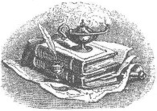

İyi okunduğunda, İncil ateizmin görüp görebileceği en etkili kitaptır.
ISAAC ASIMOV
İncilimiz bize, Tanrımızın karakterini şaşmaz ve amansız bir kesinlikle sunar. Bu belki de yayıncılık tarihinde görüp görülebilecek en lanetli özgeçmiştir.
MARK TWAIN
İçinde, konuşan hayvanların, büyücülerin, cadıların, yılanlara dönüşen sopaların, gökten düşen yiyeceklerin, suyun üstünde yürüyen insanların ve her türlü sihirli, tuhaf ve ilkel öykülerin yer aldığı bir kitaba inanıyorsunuz, sonra da bana, akıl sağlığın bozuk mu diyorsunuz?
DAN BARKER
İncil'i kölelere vermenin yararı üstüne dönen ateşli tartışmalarda, [Frederick Douglass] "onlara bir cep pusulası ve silah vermenin milyon kez daha iyi olacağını" söyledi.
BENJAMIN QUARLES
İncil. Ahmakların yazdığı, embesillerin hükmettiği, düzenbazların öğrettiği ve küçük çocukların da kalpten öğrenmek durumunda bırakıldıkları kitap.
VOLTAIRE
Çocukların Hıristiyanlığın korkunçluğuna tabi olmamaları gerektiği konusunda şimdi ikna oldum. Kendi oğlunu ölüme götüren öyküyü yazabilen bir baba kavramı, çocuklara, güzel ve toplumun takdirini kazanan bir şey olarak sunuluyorsa, ne tür bir insan davranışı o çocuklara kınanması gereken davranış olarak sunulabilir ki?
RUTH HURMENCE GREEN
Sözcüklerin anlamının tabi olduğu kesintisiz değişim, çeviriyi gereksiz hale getirecek evrensel bir dil isteği, çevirinin doğasında olan hatalar, kâtiplerin ve yazıcıların yanlışları, kasten yapılan değişiklikler de hesaba katıldığında, hepsi birlikte insan dilinin, ister sözlü ister yazılı olsun, Tanrı'nın Sözü'nün aracı olamayacağının birer kanıtıdır.
THOMAS PAINE
Eğer türümüz kendini savaşlar aracılığıyla yok edecekse, bu, yıldızlarda değil, kitaplarımızda yazdığı için böyle olacak gibi duruyor. "Tanrı", "cennet", "günah" sözcükleriyle şimdi yaptığımız her şey, geleceğimizi belirliyor.
SAM HARRIS
Cenneti, yani Kitabı Mukaddes'i, tıpkı sepicilerin deriye yaptığı gibi sınırlarının ötesine germek, dinbilimcilere özgü genel kabul görmüş bir ayrıcalıktır.
DESIDERIUS ERASMUS
İncil'in bize asıl öğrettiği şey şudur: Birini öldürmeden önce, bir yerde bağlantıları olup olmadığından kesinlikle emin olun.
KURT VONNEGUT, JR.
İncil'de, isyankâr olmama yol açan içgüdülerime karşı çok fazla şey var; o kadar çok ki, onu başından en sonuna kadar okumam gerektiğini söyleyen bu zorunluluktan nefret ediyorum. Tarihiyle ve kaynaklarıyla ilgili edindiğim bilginin, gözümün önüne zorla getirdiği can sıkıcı ayrıntıları telafi edeceğini sanmıyorum.
HELEN KELLER
Dinde, her zaman ortaya çıkan yanlış görüşleri
Saçmalıkları düşünün
Bunların içinde bir tane var mıdır ki
Bilgiç'in biri çıkıp da
Kutsal kitapların birinde ona dayanak bulmasın,
Allı pullu sözlerle akla yatkın göstermesin.[5]
WILLIAM SHAKESPEARE
İncil en büyük lanetin ta kendisi, kutsal hıncın da ayrıntılı bir özgeçmişidir.
RUTH HURMENCE GREEN
İncil denen kitapla ilgili olarak ona Tanrı'nın sözü demek Tanrı'ya küfür etmek demektir. O, yalanların ve çelişkilerin, kötü zamanların ve kötü insanların kitabıdır. Koca kitapta yalnızca birkaç iyi karakter vardır.
THOMAS PAINE
İncil'in yarattığı bütün kötülükleri düşündüğümde, bu ayarda bir şey yazabilme umudumu yitiriyorum.
OSCAR WILDE
Eski Ahit ateizmden, agnostiklerden, inançsızlıktan –ya da adına her ne derseniz deyin– şu âna kadar yazılmış bütün kitaplardan daha fazla sorumludur. Sinemanın, motosikletlerin ve golf sahalarının, cazibeleriyle boşalttığından daha fazla kilise boşaltmıştır.
A.A. MILNE
"İyi Kitap": şu âna kadar uydurulmuş en büyük hüsnütabirdir.
ASHLEY MONTAGU
